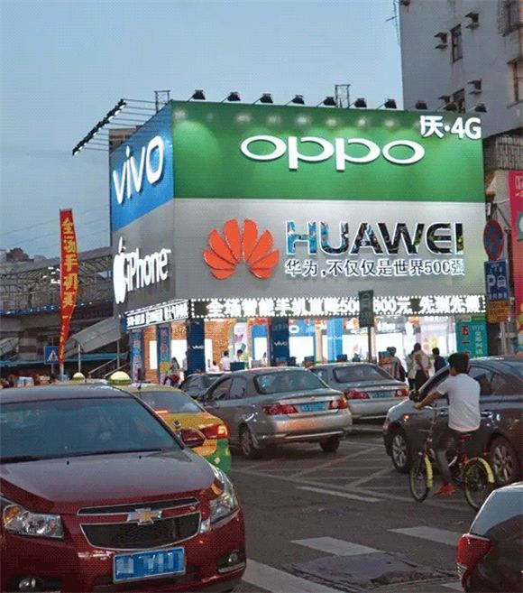

在一般人的认知中，农村人口代表着较低的文化教育水平和精神物质需求。但事实真的如此吗？当城市人挣扎在高昂的房贷中无法自拔的时候，住房和生活消费压力不大的农村人，却往往有更多的闲钱去追求精神上的满足。
笔者人生的前十八年，生活在一个八线小县城。县城不大，生活节奏缓慢，那会智能手机还未普及，工作清闲的大人们普遍每天无所事事。而最受他们欢迎的娱乐活动，就是玩麻将、打扑克。那会儿棋牌室很火，笔者家里也开过一段时间的棋牌室，接触过不少赌徒。这些赌徒大多来自县城周边的农村，一般都有摩托车，每天骑半个小时来县城的棋牌室赌博。这些赌徒们虽然看起来其貌不扬，全身衣着打扮不会超过500块，可一个个却都能在赌桌上一掷千金。笔者那会放暑假在家，偶尔帮他们跑腿买烟，跑腿费都是两三百。

农村普遍赌博成风
赌徒们普遍精力旺盛，他们大多数时候看起来沉着冷静，但偶尔激烈的争执，却总能暴露他们内心的浮躁。他们能为了翻本两天两夜不眠不休，他们能为了一桌牌局与挚友反目成仇。对于这些人来说，棋牌游戏是刚需，因为在一线城市目光所注意不到的角落里，娱乐活动实在是太匮乏了。无聊且空虚，赌博差不多是唯一能消磨时间的娱乐方式。
最近昆仑万维拟20亿收购地方性棋牌厂商闲徕互娱、贵州淘手游获1亿元投资，这背后都指向农村市场。“下乡”成了继出海之后的手游新蓝海。中国的城镇化率仅有55%，也就是说有45%的市场可以归到“下乡”的范畴当中，三线以下城市和农村市场会是中国最大的互联网用户群，而这个群体还没有被激活。而真正让棋牌游戏下乡变得可行的，是移动设备厂商多年的努力：乡镇街道无处不在的蓝绿大厂（OPPO、VIVO），华为的“千县计划”都为棋牌游戏的终端支持提供了基础条件。

OPPO、VIVO、华为的线下体验店遍布乡镇
时到今天，像笔者的父辈，甚至祖辈都是人手一个智能机，都会建立各种各样的亲戚微信群来联络感情。农村地广人稀，但随着硬件厂商的不断渗透和智能手机的普及，这里成了手游厂商的宝地。而规则明确，操作简单的手机棋牌游戏，更是恰好满足了农村人的精神需求。相对于出海，下乡对很多棋牌游戏创业者来说确实更加接地气。毕竟没有任何一个棋牌市场，能与数以亿计的农村乡镇相比。
而在纹桃看来，棋牌游戏下乡最大的难题，是绝大多数的棋牌游戏创业者，对农村的了解都很片面。就2017年来说，很多原本从事P2P、贵金属交易的创业者，都表达了对地方棋牌游戏市场的看好。可这些创业者普遍对这个行业感到很迷茫，虽然看好这个市场，却不知道应该怎么去做。具体表现为：（1）不知道农村用户更喜欢哪种类型的棋牌游戏；（2）知道农村广告的信任度很高，不知道推广运作应该怎么进行；（3）县市级微信使用率不足1/4，支付是个大难题。针对这些问题，纹桃给出以下建议，希望能给广大棋牌游戏创业者一些帮助。
1、农村用户有些钱又有时间，从吸引用户，培养种子用户的角度来讲，地方性的麻将肯定是不二之选。但作为麻将来说，一局耗时一般都超过8分钟，如果常规运营，在初期玩家人数不多的情况下，盈利会是个问题。所以当玩家比较稳定的时候，可以增加一些街机转盘类游戏来增加盈利。一来此类游戏简单易上手，二来耗时短，从游戏币消耗的角度来看会更快一些。
2、相较于城市，农村用户的优势和劣势非常明显。这些优劣势直接影响着在农村应该怎么去做手游分发和推广。劣势是网络基础设施没有那么完善，他们搞不明白App Store和应用商店的作用，甚至不会自己下载软件。优势是农村对网络、广告的信任感极高。随着网络诈骗的频频曝光，城市人早已对各种广告轰炸、中奖短信免疫。但是各种错漏百出的百度搜索广告、不靠谱的电视购物产品却能在农村获取极好的信任度，吸引眼球的低俗内容却能够获得惊人的流量。对于要进入农村市场的手游厂商来说这绝对是利好消息，毕竟城市用户越来越难取悦了。
在这种情况下，纹桃建议在县级电视广告、县级广告商、县级生活公众号上门多做文章。 另外，则是微商形式展开的代理，当然这样的形式很容易在发展中慢慢变味。如果能够控制得当，组织当地人建立群组，不仅可以起到宣传的作用，还可以成为农村用户提供资讯信息的窗口。找到传播信息的意见领袖，绝对比到处张贴广告要有用得多。
3、虽然微信和支付宝的普及速度很快，但在广大农村却并没有想象中的那么多人使用。根据2016年年中的数据，有超过1/5的智能手机用户，从来没有自己下载安装过APP。使用微信的人群，在很多县级市不足1/4。也就是说这群人就算有消费需求，也并不懂如何完成线上支付，微信支付也远没有我们想象的那么普遍。在支付上，纹桃认为也许可以采用代理的办法，和农村的一些应用、电影下载点合作，推出游戏卡售卖和充值服务。线上的话，微信支付虽然谈不上普及，但却也是目前最好的选择，过年红包的流行能够培养一部分用户的支付行为，微信支付可以作为一个辅助的支付工具。
总而言之，棋牌游戏的下乡之路绝不可能一帆风顺，可也确实存在着无限的商机。纹桃科技致力于棋牌游戏开发13年，拥有大量开发运营经验和大批成功案例。
想打造一款迅速盈利的地方棋牌游戏，欢迎咨询QQ/电话热线：18711739336
了解更多棋牌游戏行业信息：在线咨询>>


游戏产品
PRODUCTS

售后服务
SERVICE

技术支持
TECHNOLOGY

运营指导
OPERATING